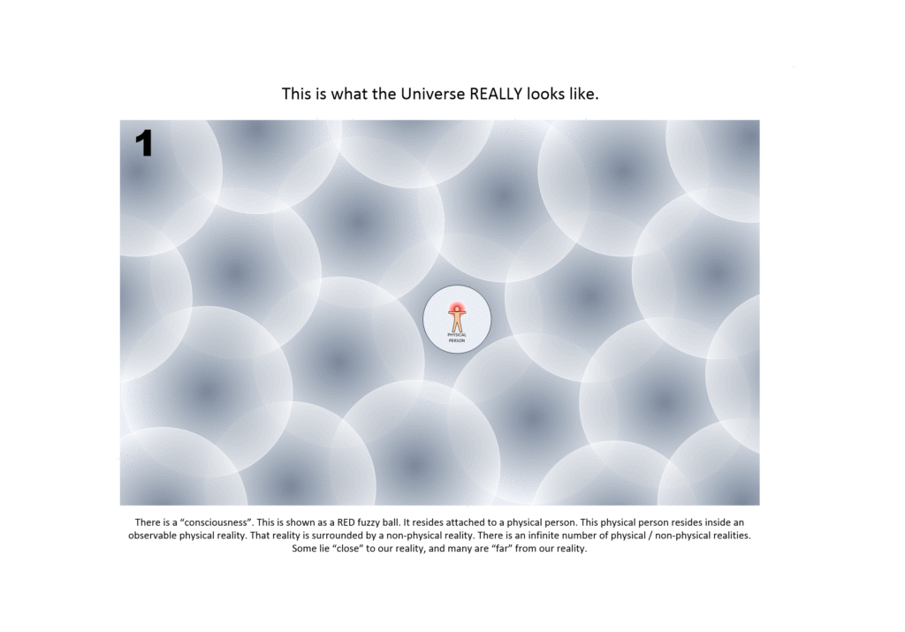
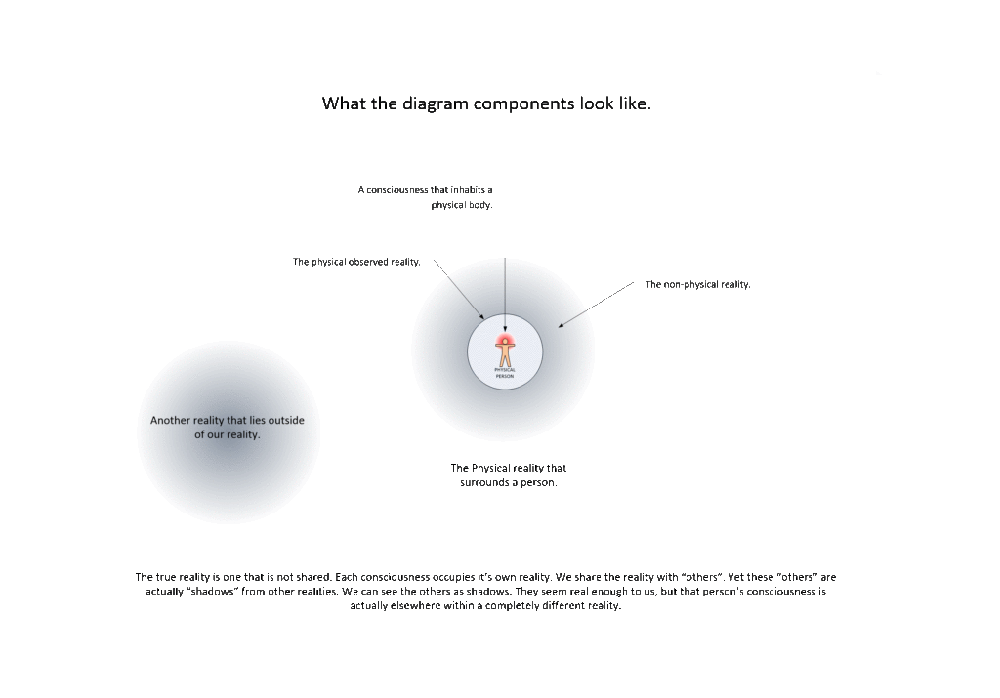
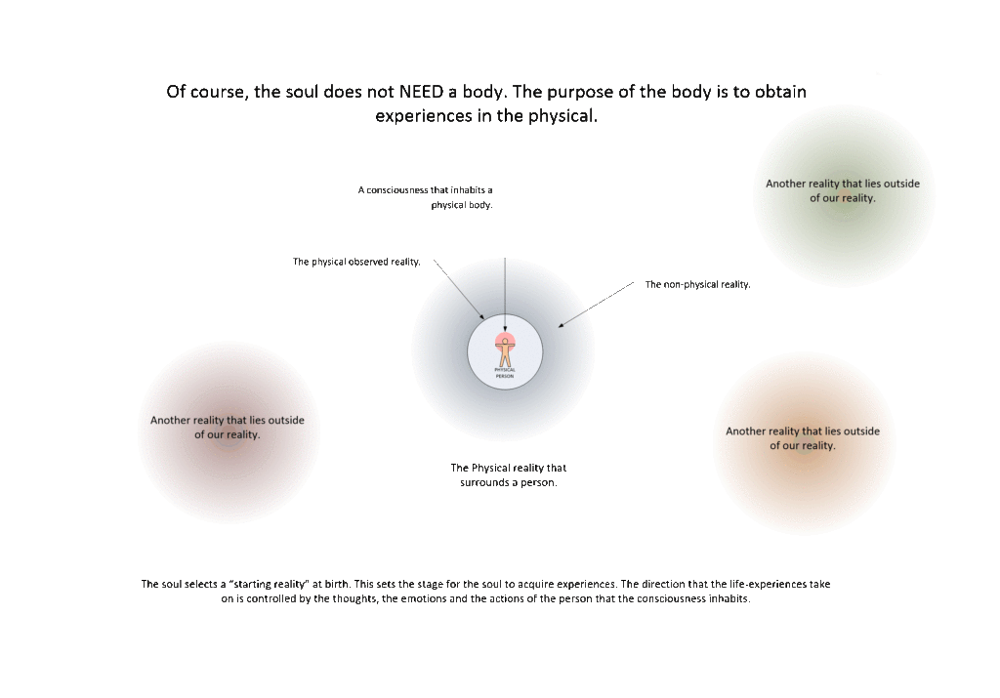
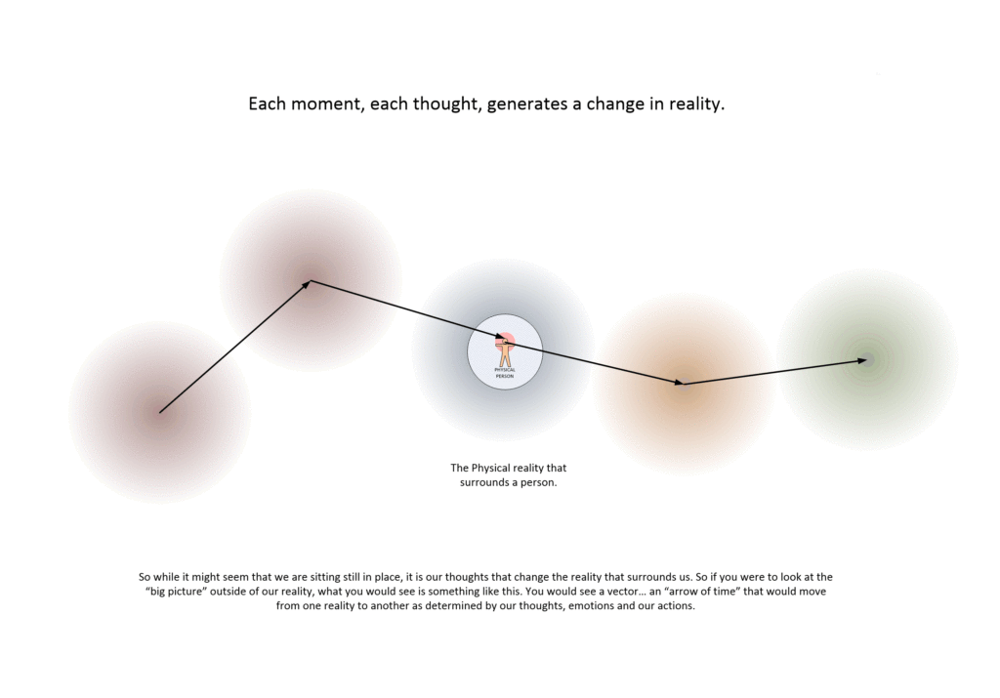
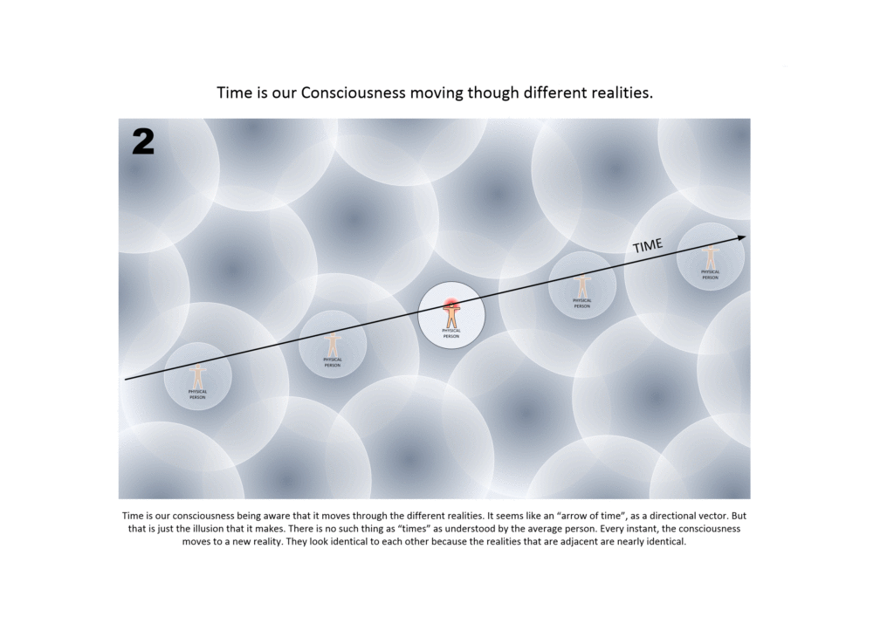
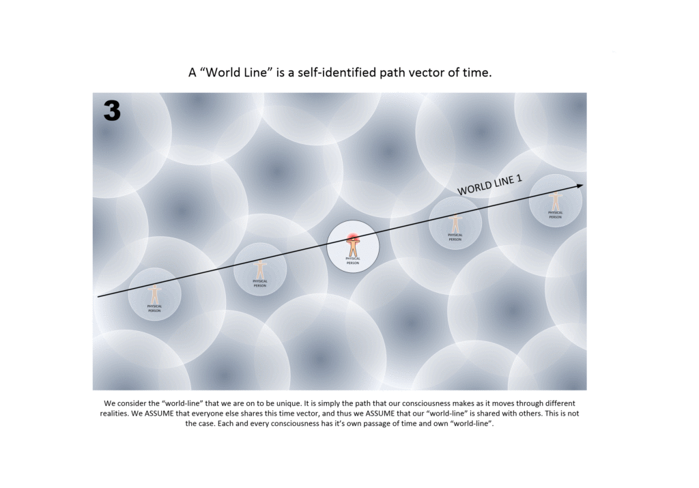
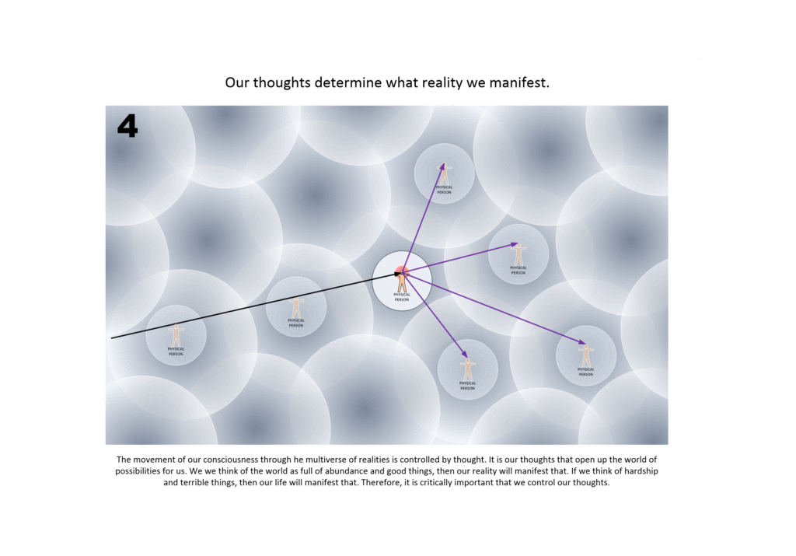
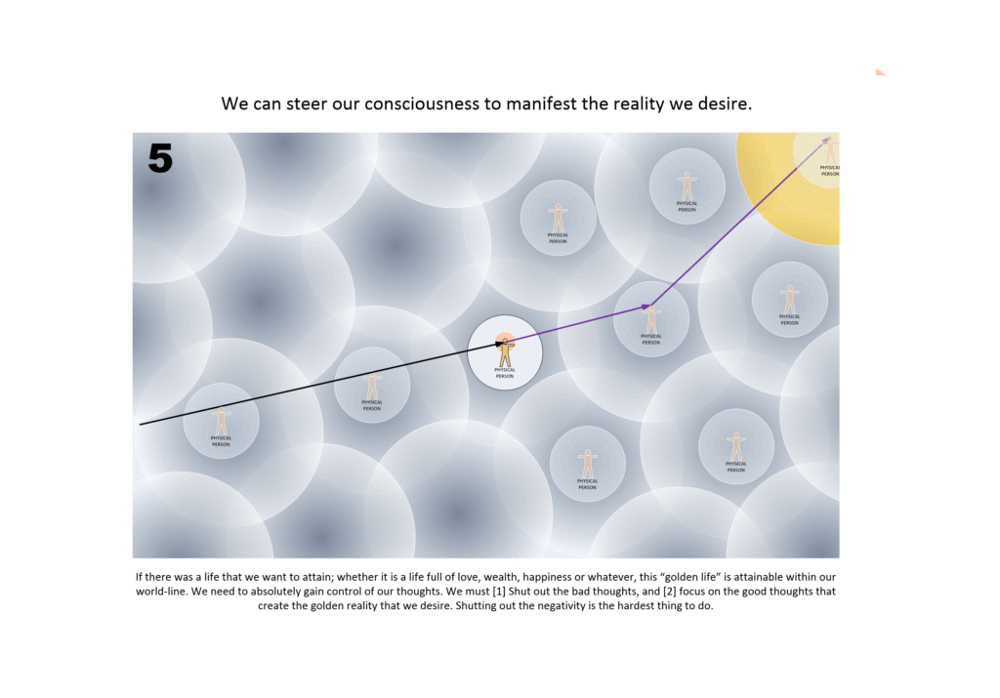
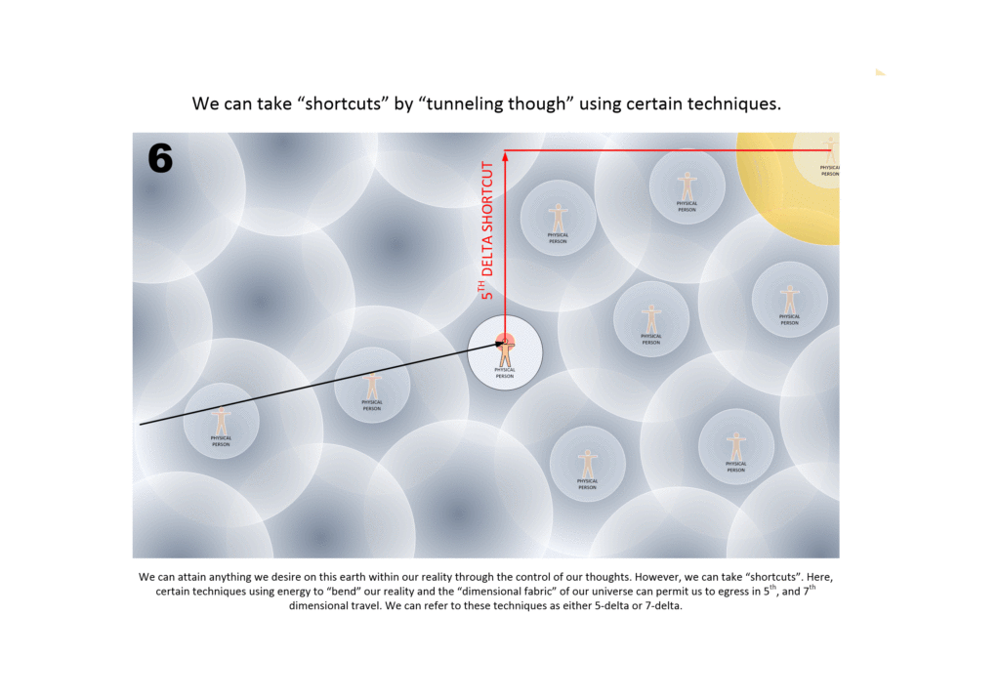

Here is a simplistic premier on how our universe works, and how we can control the reality that we inhabit. We also touch upon how we can “cheat” and use certain techniques to cross into other realities, or other world-lines.
This is often referred to as world-line travel.
To best understand world-line travel or dimensional egress, you need to throw away any obsolete Newtonian ideas about the universe that you might cherish. You all need to. If you keep thinking in ways that have no bearing on reality, how in the heck will you eventually be able to master reality?
So…
Throw it all away. Chuck it all. Listen to me, and learn. This is the way the universe really works.
How world-line travel can manifest
First of all, here is what the universe really looks like. It is a multiverse with a near infinite number of realities that we might inhabit at any given time.
This pretty much agrees with the MWI theory of quantum mechanics. However, most people never think about it and take it to it’s logical conclusion. They try to take the observed physical world and try to make it fit into the MWI. It doesn’t work that way. It just cannot fit together. It’s like mixing oil and water; not gonna happen.
This is how it manifests…
- There is no such thing as time.
- The “physical” is a construct.
- We possess a “soul” that does understand and operate in the true totality of the universe.
- The “soul” creates a “consciousness” for it to use.
- The “consciousness” is placed within a physical body residing within a reality construct.
Now, the problem is what when people study the MWI theory, they do so with the “baggage” of their childhood assumptions. For instance, we assume that there might be multiple world-lines, but there is only one that we all share. The others might not exist, or that the person we are with is a person with an active consciousness within our reality.
All these assumptions are false.
Nothing is shared. It only appears that way. We occupy a given reality alone. Our consciousness connects to a physical body within the reality that our soul selects.
It looks like we all share our universe with others. Yes, that is what it looks like. However, that is not the case. The universe that we inhabit is designed for us and us alone. There is only one “consciousness” within it. That is our very own “consciousness”.
There is generally, one “reality” per one “consciousness”.
All those other people are like props that populate our reality. Yes, there is a chance that some of them have a “consciousness” controlling them, but they are off in their very own reality doing so. What we actually experience and see is the “shadows” of what their “consciousness” does within our reality.

Some clarity on the graphic is in order
The image above is really quite different what what people think the universe looks like. That is because it is. We, as humans, can only see a very small portion of the universe. We can only see one instance in time, that is our “reality”.

There are actually two aspects of “reality”. There is a visible reality, and an unseen reality. The unseen reality includes thoughts, emotions, heaven, and all sorts of things from radio waves to gravity.

Further, there is a physical body. And our soul connects to it using a mechanism known as consciousness.
Every moment is a change in reality…
Every moment that we live is a change in our reality. If we think one tiny thing, our reality adjusts accordingly. If we feel sad, our reality changes. Our reality is a on-going dynamic “bubble” that is constantly changing. The thing is that we do not stay in that reality. We move to a new reality with every change in thought, action, emotion or outside influence.

Further, all the influences of others, and their thoughts change our reality as well. Thus, if you were to look at a clock, you would see your reality change. It would seem like you were sitting still, but in truth your entire reality was constantly changing in all sorts of ways.

The passage of time is the movement of consciousness.
But, what about world-lines?
Now it should be understood that people who don’t understand our universe, and don’t understand what time is, would have the dickens of a time understanding what a “world-line” is. To them, they view it as a “different” universe. Like ours but somehow “different”. Well, it is and it isn’t.
But, it need not be confusing.
All a “world-line” is is the time vector as experienced by a given consciousness.

Each thought, emotion, or event that surrounds us (in the physical and non-physical) alters our reality. As such, then we realize that by controlling our thoughts and our actions…
…we can control the realities that we inhabit.
We can control the direction of our life and what manifests. It’s up to us. This shouldn’t be a big surprise. Many people have promoted this idea over the years. From The Secret, to the Intention Experiment, to the water studies of Dr. Masaru Emoto.
The difference here is that I argue that is is the fundamental mechanism that controls our reality. I argue that the consciousness is linked at a fundamental level with the reality that we inhabit.
More about thoughts…
This is both good and bad.
For instance, if we isolate the bad thoughts, and the bad and toxic people from our lives, we can start to inhabit new realities that are better. Likewise, if we don’t, and allow the bad things to affect our thoughts and moods, then bad things can occur.
Which is why I argue that everyone should shut off the American media. It is a toxic brew designed to manipulate, and it is plunging all of America into dark times. But, I digress…

However there is more to this than “what meets the eye”. You see, the unseen reality is much larger and more powerful than the seen and observed reality. While you might be successful in changing your observed physical reality, it will take some time to all the unseen reality to readjust.
The changes are never immediate.
That is because the thoughts of other “quantum shadows” influence the reality that we inhabit. It takes time to “pull away” and release from those other influences.
For instance, let’s suppose you wanted to leave a relationship with a bad person. You stop talking to them, you stop seeing them, and you stop thinking about them. Yet, you wonder why your life doesn’t immediately spring up and improve…
…that is because their thoughts, their emotions and their actions are still influencing their unseen reality. This interaction and influence will also influence your unseen reality.
The more influences in your life, the harder it will be to remove yourself from them. Be advised.
Once we are able to master this, then we can easily steer our life to be the kind of life that we desire…

Shortcuts
Many people should be aware that you can take “shortcuts” to bypass the realities that we would normally encounter.

We can, using certain techniques, “tunnel through” the adjacent realities to hit the “rich meat” of our desires. Many of these techniques require mechanisms or devices to work. I have covered these in other posts.
For instance, you can utilize a fixed portal. This consists of a device that can place a person anywhere in the universe at any time. It is big and bulky and requires some training to use…


Or, you could end up like me, and utilize a biological artifice (EBP integrated with ELF implants) to alter your realities. The problem with this is that someone (or something) else is driving your experiences. Yikes!


You could utilize a personal hand-held device to move about. There are all sorts of examples of this. Here, I show examples of 5th dimensional egress, as well as some more advanced 7th dimensional egress.


Or you could utilize a vehicle to do so. Here we talk about how it is done and why. Compared to the 5th and 7th dimensional egress, and the MWI portal, and EBP x ELF implants, this method is rather crude.

In fact, if you want to study this issue in more depth, perhaps the John Titor saga might enlighten you…
Another person, collectively known by the identity of “John Titor” claimed to utilize world-line (MWI egress) travel to collect artifacts from the past. He is an interesting subject to discuss. Here we have multiple posts in this regard.
They are;


Conclusion
World line travel opens up all sorts of opportunities to understand our place within this universe. Fundamentally, we can understand how consciousness is connected and important to the soul. If we can embrace this understanding, then we have the ability to interact with other intelligent species and create environments for the mutual benefit of all.
There are many ways to break outside of the reality that we inhabit.
We can use thoughts and actions. We can control our emotions and the people around us. We can control what we read, what we watch and what we eat.
We can also use advanced techniques in the manipulation of energy and quantum behaviors to enable more radical and advanced methods of entering and leaving our realities. In fact, some of these techniques can result in severely different realities. Realities that are quite different from anything that we have experienced within our already experienced world-lines.
MAJestic Related Posts – Training
These are posts and articles that revolve around how I was recruited for MAJestic and my training. Also discussed is the nature of secret programs. I really do not know why the organization was kept so secret. It really wasn’t because of any kind of military concern, and the technologies were way too involved for any kind of information transfer. The only conclusion that I can come to is that we were obligated to maintain secrecy at the behalf of our extraterrestrial benefactors.


MAJestic Related Posts – Our Universe
These particular posts are concerned about the universe that we are all part of. Being entangled as I was, and involved in the crazy things that I was, I was given some insight. This insight wasn’t anything super special. Rather it offered me perception along with advantage. Here, I try to impart some of that knowledge through discussion.
Enjoy.


MAJestic Related Posts – World-Line Travel
These posts are related to “reality slides”. Other more common terms are “world-line travel”, or the MWI. What people fail to grasp is that when a person has the ability to slide into a different reality (pass into a different world-line), they are able to “touch” Heaven to some extent. Here are posts that cover this topic.


John Titor Related Posts
Another person, collectively known by the identity of “John Titor” claimed to utilize world-line (MWI egress) travel to collect artifacts from the past. He is an interesting subject to discuss. Here we have multiple posts in this regard.
They are;